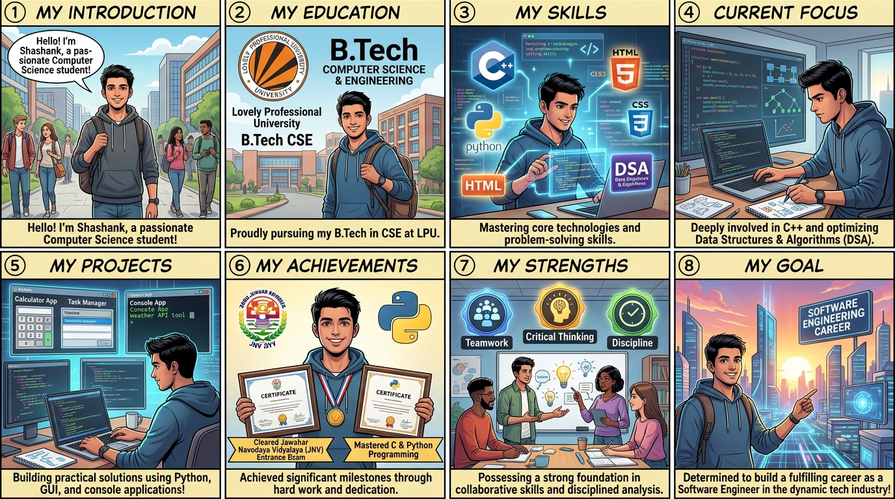

{kind=link}
My Professional Portfolio: Comic Storyboard
A structured narrative walking through academic journey, technical skills in C++ & Python, dedicated DSA focus, practical software applications, strengths, and long-term career ambition.

Detailed Panel-by-Panel Storyboard & Narrative Verse
Includes full dialogue balloons, narrative captions, and technical explanations for every panel
Shashank standing outside the university academic block, holding a coding laptop and backpack with an enthusiastic and welcoming expression.
"Hi, I am Shashank Shukla, a B.Tech Computer Science and Engineering student at Lovely Professional University! I am passionate about programming, problem solving, and software development. Currently, I am focusing on mastering C++ and Data Structures & Algorithms while building practical real-world projects with Python."
"Every great engineering journey begins with curiosity, discipline, and a strong ambition to solve meaningful problems through software."
Shashank presenting an academic timeline board connecting his high school distinction with Lovely Professional University's engineering campus.
"I am pursuing my B.Tech in Computer Science & Engineering at Lovely Professional University (2025–2029). Prior to college, I maintained academic distinction with 91% in 10th CBSE and 73% in 12th CBSE, giving me a solid mathematics and analytical base."
"A rigorous educational grounding provides the theoretical pillars for mastering computer architecture, discrete mathematics, and algorithms."
Holographic icons floating around Shashank displaying C++, Python, HTML/CSS, and Data Structures & Algorithms.
"My technical repertoire is anchored in C++ for core algorithmic computation, Python for rapid application development and GUI tooling, and semantic HTML & CSS for structured interface design."
"Focusing on language syntax, memory management, and structured data flow over superficial shortcuts."
Shashank at his dual-monitor coding setup, solving tree and array problems while tracing algorithmic time and space complexity.
"I am actively dedicating daily hours to mastering C++ and Data Structures & Algorithms. By progressing through Learning → Practicing → Building → Improving, I train my mind to write optimized, high-performance code."
"Consistency over intensity: Building strong problem-solving muscles one data structure and algorithm at a time."
Shashank demonstrating interactive software: Student Management System console terminal, Tkinter graphical Calculator, Rock-Paper-Scissors game, and To-Do list app.
"I transform concepts into functional software! My portfolio features a console-based Student Management System handling CRUD operations, a Tkinter GUI Calculator with dynamic expression parsing, and practical task management applications."
"Real engineering happens when theory is converted into executable, bug-free, and user-friendly software."
Shashank proudly showcasing his verified achievement badges: Cleared Jawahar Navodaya Vidyalaya Entrance Exam (JNVST) and Mastered C & Python Programming.
"A major milestone was clearing the prestigious, highly competitive Jawahar Navodaya Vidyalaya Entrance Exam (JNVST)! Additionally, I have mastered C Programming for low-level memory and pointer control, as well as Python for application development."
"Competitive exam success combined with dual-language programming mastery forms a resilient problem-solving foundation."
Split comic panels showing Shashank collaborating with peers during a group hackathon, analyzing logic, and managing project deadlines efficiently.
"Technical competence is only half the battle. My core strengths are active teamwork, clear technical communication, structured critical thinking, and disciplined time management to deliver results under pressure."
"Empathetic communication and reliable teamwork turn individual programmers into high-performing engineering units."
Shashank standing confidently looking toward a glowing futuristic tech skyline, ready to take on software engineering challenges.
"My ultimate aspiration is to become a top-tier Software Development Engineer (SDE). By continually deepening my DSA fundamentals, mastering clean software architecture, and writing resilient code, I look forward to building technology that impacts millions."
"The journey has just begun. With passion, persistence, and continuous learning, the future is bright!"
Full 3.5 to 4-Minute Classroom Presentation Script
Strictly organized according to rubrics: Verbal Competence, Thematic Development, & Confidence
"Respected professors, evaluators, and dear classmates, a very good morning to all of you. Hi, I am Shashank Shukla, a B.Tech Computer Science and Engineering student at Lovely Professional University. Today, I am excited to present my professional journey through this 8-panel comic storyboard titled 'My Portfolio: Building Strong Engineering Foundations'. As a passionate computer science student, I love programming, problem solving, and building practical applications. Let me walk you through my academic milestones, technical focus in C++ & DSA, and career aspirations."
"Turning your attention to Panel 2, I am currently pursuing my Bachelor of Technology in Computer Science and Engineering at Lovely Professional University for the 2025 to 2029 cohort. My academic journey is rooted in strong discipline and consistency. In my secondary schooling at Lala Deep Chand Jain Public School, I secured academic distinction with 91% in the 10th CBSE Board examinations, followed by 73% in the 12th CBSE Senior Secondary examinations. This background instilled in me a deep appreciation for mathematical rigor, logical analysis, and disciplined study habits."
"In Panel 3, we explore my technical skill matrix. I believe that true engineering excellence is built on deep fundamentals rather than shallow familiarity. My primary language of study is C++, which allows me to understand low-level memory allocation, pointer manipulation, and Object-Oriented principles. Alongside C++, I actively write Python to build practical utilities and graphical software, while utilizing HTML and CSS to construct semantic, accessible web interfaces. My focus is on writing clean, modular, and maintainable code."
"Panel 4 illustrates what I dedicate my hours to on a daily basis: Data Structures & Algorithms in C++. As an aspiring software engineer, I recognize that the core of computing lies in efficiency—optimizing time and space complexity. I approach DSA through a structured 4-phase learning loop: Learning core theoretical concepts, Practicing algorithmic patterns, Building modular code, and Continually Improving complexity. I am currently focused on linear data structures, searching and sorting algorithms, and complexity analysis (Big-O notation), strengthening my quantitative problem-solving intuition."
"Theory without application is incomplete. In Panel 5, I showcase four authentic software projects I have developed using Python: First, a console-based Student Management System that implements structured record handling and validation. Second, a graphical Basic Calculator built with Tkinter, featuring intuitive UI grid geometry and arithmetic expression handling. Third, an interactive Rock-Paper-Scissors game implementing game state algorithms and randomized opponent logic. And fourth, a functional To-Do List productivity tool. These projects reinforced my understanding of control flows, event-driven interfaces, and file operations."
"In Panel 6, I highlight my defining competitive and technical achievements. A proud milestone was clearing the highly competitive national-level Jawahar Navodaya Vidyalaya Entrance Examination (JNVST), which recognized my analytical and mathematical aptitude. Furthermore, I have mastered the C programming language—achieving deep control over pointers, memory allocation, and data structures—alongside mastering Python for versatile software development."
"Panel 7 highlights my core interpersonal strengths: active teamwork, critical thinking, adaptable communication, and time management. I thrive in collaborative environments where exchanging ideas and peer code reviews elevate the collective output of the team. My value proposition is my relentless curiosity, disciplined work ethic, and ability to break down ambiguous challenges into structured solutions."
"Finally, Panel 8 sets my eyes on the horizon: my goal is to launch my career as a Software Development Engineer (SDE), creating robust, scalable systems that solve real-world problems. Thank you very much for your kind attention. I am now delighted to open the floor to any questions or feedback!"
Anticipated Evaluator Q&A Preparation
Ready-to-speak model answers for common questions asked by teachers
Answer: "C++ gives me a direct understanding of memory management, pointers, and computational efficiency which is essential for DSA and competitive programming. Python, on the other hand, allows rapid application development and building GUI tools like Tkinter calculators and management systems. Together, they give me both low-level depth and high-level productivity."
Answer: "The most critical aspect was handling input validation and maintaining structured CRUD operations without crashing when unexpected user inputs occurred. Structuring the menu loop cleanly in Python helped solidify my procedural coding logic."
Answer: "I am currently strengthening array manipulations, two-pointer techniques, and binary search. My next milestone is mastering linked lists, stacks, and recursion before transitioning into non-linear data structures like binary trees and graphs."